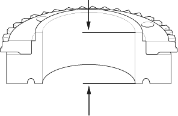
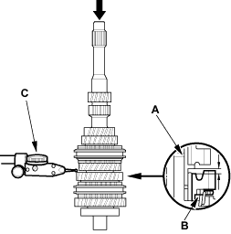
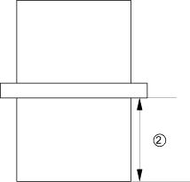
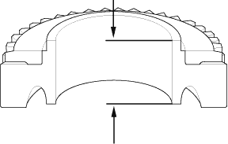

- Measure the thickness of 4th gear.
- If the thickness of 4th gear is less than the service limit, replace 4th gear with a new one.
- If the thickness of 4th gear is within the service limit, replace the 3rd/4th synchro hub with a new one.
Standard:
23.92 - 23.97 mm
(0.981 - 0.944 in.)
Service Limit:
23.80 mm (0.937 in.)

- Measure the clearance between the distance collar (A) and 5th gear (B) with a dial indicator (C). If the clearance is more than the service limit, go to step 8.
Standard:
0.06 - 0.16 mm
(0.002 - 0.006 in.)
Service Limit:
0.25 mm (0.010 in.)


- Measure distance (2) on the distance collar.
- If distance (2) is not within the standard, replace the distance collar with a new one.
- If distance (2) is within the standard, go to step 9.
Standard:
24.03 - 24.08 mm
(0.946 - 0.947 in.)

- Measure the thickness of 5th gear.
- If the thickness of 5th gear is less than the service limit, replace 5th gear with a new one.
- If the thickness of 5th gear is within the service limit, replace the 5th/6th synchro hub with a new one.
Standard:
23.92 - 23.97 mm
(0.981 - 0.944 in.)
Service Limit:
23.80 mm (0.937 in.)
